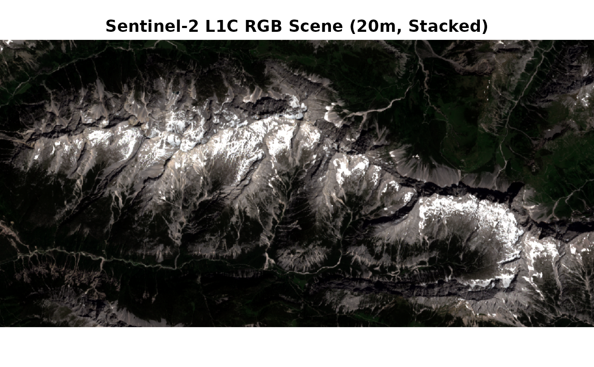
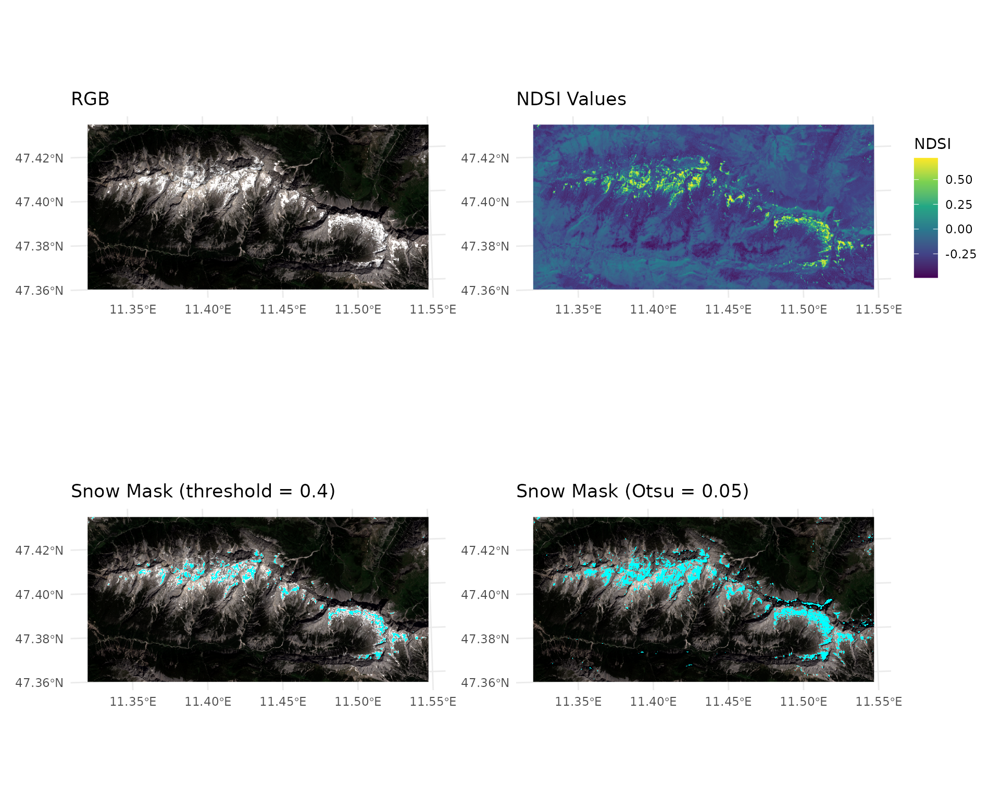
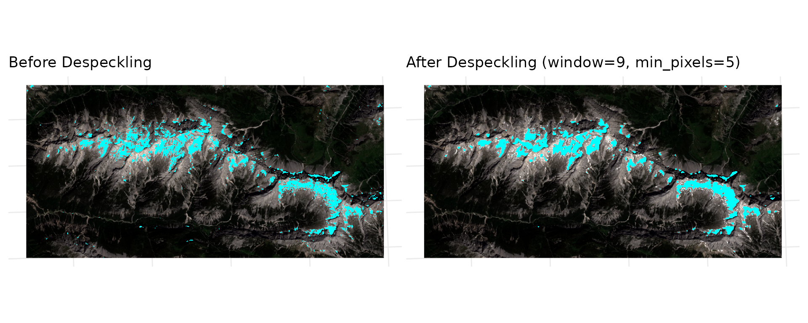
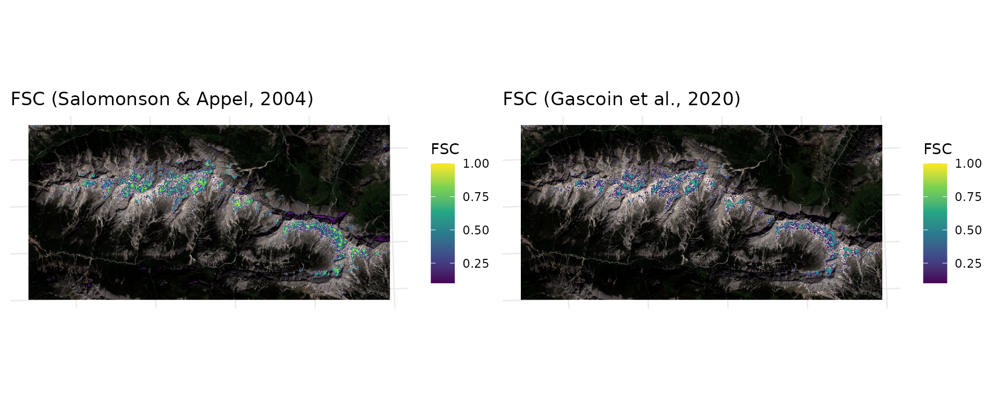

Snow Detection and Fractional Snow Cover with snowsense
snowsense-example.RmdThis vignette demonstrates a full snow analysis workflow using a Sentinel-2 L1C scene (Stacked to a single tif, resampled to 20m) from the Austrian Alps (June 2023). The corresponding Github Repository can be found here, which also contains the dataset shown here. The code for the plots is left out in this vignette.
The workflow includes:
- Data Loading
- Snow Detection
- Despeckling
- Fractional Snow Cover Estimation using two different regression approaches
library(terra)
#> terra 1.9.11
library(tidyterra)
#>
#> Attaching package: 'tidyterra'
#> The following object is masked from 'package:stats':
#>
#> filter
library(ggplot2)
library(snowsense)
library(patchwork)
#>
#> Attaching package: 'patchwork'
#> The following object is masked from 'package:terra':
#>
#> areaData Loading
The example dataset is a clipped Sentinel-2 L1C scene (dtype: uint16, bands: B01 - B12) which has been stacked to a single multi-band GeoTIFF and resampled to 20m resolution.
# Load Packages
library(snowsense)
ds <- rast("../inst/extdata/example_s2_20m.tif") #load sentinel2 data as SpatRaster with terra
ds <- ds / 10000 #scale to reflectance values (0-1)
print(paste("Bands available:", paste(names(ds), collapse = ", ")))
#> [1] "Bands available: B01, B02, B03, B04, B05, B06, B07, B08, B8A, B09, B10, B11, B12"
plotRGB(ds, r="B04", g="B03", b="B02", stretch="lin", main="Sentinel-2 L1C RGB Scene (20m, Stacked)") 
Snow Detection
snowsense supports three spectral indices for snow
detection (NDSI, RGB_brightness, and
WSI).
NDSI is demonstrated here as it suits the Sentinel-2 data best. An
approach with a fixed threshold (0.4) and an unsupervised approach using
Otsu’s method
are shown for comparison.
result_ndsi <- detect_snow(ds, index = "ndsi",
bands = list(green = "B03", swir = "B11"),
threshold = 0.4)
# Note that if no threshold is set, the function falls back to Otsu's method. An unsupervised
# approach that selects an optimal threshold for separating bimodal grayscale data into two classes
result_ndsi_otsu <- detect_snow(ds, index = "ndsi",
bands = list(green = "B03", swir = "B11"),
threshold = NULL)
#> Warning: [hist] a sample of 70% of the cells was used#> <SpatRaster> resampled to 500364 cells.
#> <SpatRaster> resampled to 500364 cells.
#> <SpatRaster> resampled to 500364 cells.
#> <SpatRaster> resampled to 500364 cells.
The bottom right plot depicts the snow mask derived from using Otsu’s method for thresholding. The automatically selected lower threshold here works better, capturing more snow pixels and reducing false negatives from the fixed threshold (from a visual inspection). However, with a fixed threshold you have full control and reproducibility across scenes. RGB_brightness is especially useful for high resolution drone data, where only RGB is available. WSI is based on a paper from Donmez et al. (2021) and is especially good at discriminating between water and snow.Despeckling
Snow masks often contain speckle noise (isolated snow classified
pixels that may be noise or small patches that can be caused by
misclassification). despeckle_snow() removes these using
majority filtering and/or a minimum patch size filter.
clean <- despeckle_snow(result_ndsi_otsu$binary_mask,
window=9, min_pixels=5)#> <SpatRaster> resampled to 500364 cells.
#> <SpatRaster> resampled to 500364 cells.
The despeckling function removes small isolated snow pixels that are likely false positives. The parameterswindow and
min_pixels control the size of the neighborhood (majority
based filtering) and the minimum number of connected pixels required to
retain a snow patch (size based filtering). The plot shows that after
despeckling a lot of tiny blue dots have been removed, indicating it is
an effective way to clean up the snow mask from tiny positives. However,
it also removes some small snow patches that may be real, so there is a
tradeoff between removing noise and losing small features.
Fractional Snow Cover Estimation
Rather than a binary snow mask, snow_cover_fraction()
estimates the fraction of snow cover per pixel directly using NDSI-based
regression. This is useful when sub-pixel snow cover information is
needed, for example at coarser resolutions.
Two regression approaches are currently supported in the package: - Salomonson & Appel (2004): FSC = 0.06 + 1.21 * NDSI - Gascoin et al. (2020): FSC = 0.5 * tanh(2.65 * NDSI - 1.42) + 0.5
#salomonson
fsc_sal <- snow_cover_fraction(ds, bands = list(green = "B03", swir = "B11"),
method = "salomonson")
#gascoin
fsc_sig <- snow_cover_fraction(ds, bands = list(green = "B03", swir = "B11"),
method = "sigmoid")#> <SpatRaster> resampled to 500364 cells.
#> <SpatRaster> resampled to 500364 cells.